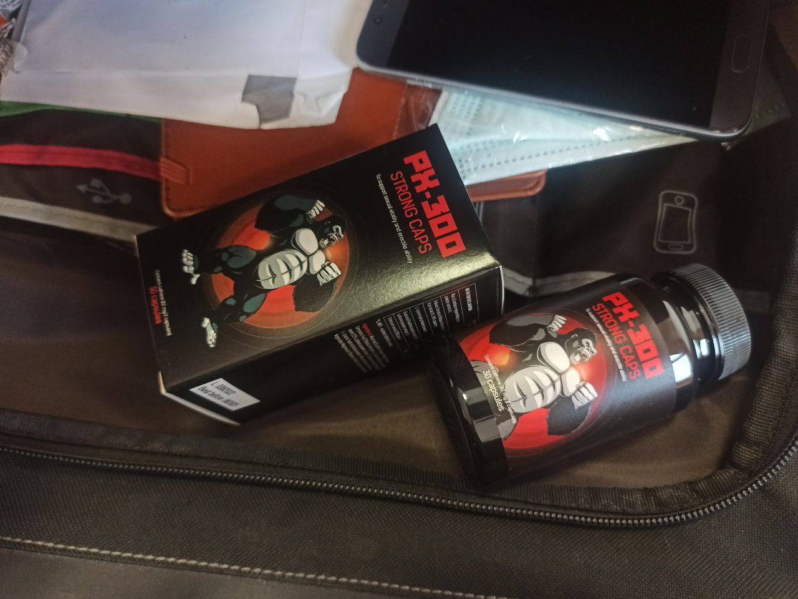
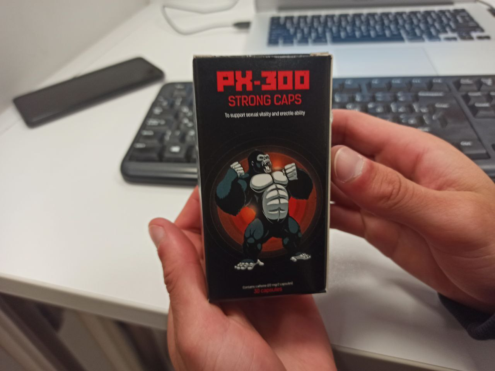
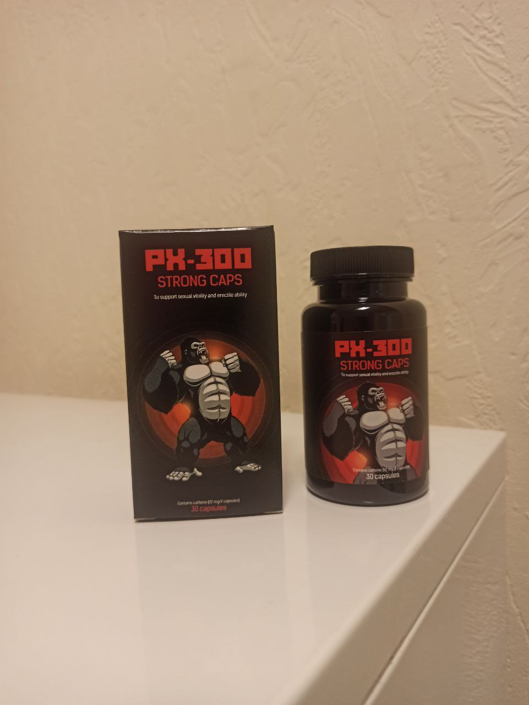

Il numero di uomini con problemi di potenza sta raggiungendo nuovi record in Italia! Metodi innovativi per il trattamento dell'impotenza e della prostatite in soli 7 giorni!

Il 2023 che volge al termine ha evidenziato dati record riguardanti il numero di uomini con problemi di impotenza in Italia. Fatti preoccupanti e un nuovo approccio per risolvere definitivamente questa problematica!
Durante il 42° congresso dell'Associazione Mondiale degli Urologi, organizzato dall'International Society of Urologists, è stato presentato un rapporto con statistiche allarmanti riguardanti le malattie urologiche in Italia.

Il dottor Andrea Militello, eminente urologo e andrologo specializzato nelle questioni legate alla salute maschile, ha ricevuto il premio come "Miglior Urologo d'Italia" nel 2014, 2018 e 2020. Membro del Consiglio Europeo degli Urologi, Membro del Collegio Americano dei Chirurghi (FACS), Membro del Consiglio Europeo di Medicina Sessuale (FEBSM).
Miglioramento della diagnosi, sperimentazione di nuovi metodi e inefficacia delle terapie ospedaliere sono i principali argomenti che sono stati discussi durante il congresso.
Come risultato, gli urologi hanno presentato statistiche relative a 10 anni di attività:
- Nel periodo 2023, il numero di pazienti affetti da patologie del sistema urogenitale è aumentato del 60,5%.
- I casi di disfunzione sessuale maschile sono cresciuti del 57%.
- Le patologie neoplastiche maligne sono aumentate del 180,7%, rappresentando un triplo incremento rispetto al 2022
.jpg)
La problematica della disfunzione erettile è rilevante per la nostra nazione poiché gli uomini italiani ritardano l'avvio del trattamento, trascurando i primi segnali di scarsa potenza e prostatite. Tuttavia, la malattia progredisce in modo graduale.
Fasi dello sviluppo dell'impotenza e le relative conseguenze:
Fase 1. La potenza scompare occasionalmente, ad esempio dopo il consumo di alcol o spontaneamente. A volte manca il "desiderio sessuale". Molti attribuiscono questo alla strenua attività lavorativa, allo stress, e così via. Tuttavia, questo rappresenta già il primo segnale che nel tempo le condizioni potrebbero peggiorare ulteriormente.
Fase 2. La potenza diminuisce sempre più. Anche quando è presente, non è così robusta come in passato. Il pene può perdere rigidità durante il rapporto sessuale o durante l'uso del preservativo. Di solito, in questa fase, l'individuo inizia a riflettere sulla problematica, ma spesso si limita a ricorrere occasionalmente al Viagra.
Fase 3. La potenza riappare sporadicamente. La libido diminuisce drasticamente. L'uomo diventa irritabile, perde energie e la volontà di intraprendere qualsiasi attività. Si verificano problemi familiari, con frequenti litigi, tradimenti coniugali da parte femminile, e la situazione può arrivare al divorzio.
Fase 4. Completa impotenza. Nemmeno il Viagra è di aiuto. Fino al 91% degli uomini in questa fase diventano solitari, poiché le donne raramente convivono con impotenti e, se lo fanno, spesso soffrono. Si sviluppano depressione e varie afflizioni fisiche. Il nostro organismo è progettato in modo che la sua funzione primaria sia la riproduzione. Una volta privato di questa funzione, l'organismo inizia a deteriorarsi rapidamente.
90% DEGLI UOMINI IN ITALIA, RISCONTRANO PROBLEMI A LETTO, e il 73% degli uomini diventa impotente già entro i 40 anni!
Sintomi apparentemente insignificanti nelle prime fasi portano quasi sempre a conseguenze irreversibili:
Impotenza

MOSTRA IMMAGINE
Cancro alla prostata. La causa più comune di morte (fino all'88%) negli uomini affetti da impotenza.

MOSTRA IMMAGINE
Adenoma prostatico
MOSTRA IMMAGINE
Calcoli renali. La malattia dei calcoli renali si sviluppa anche a causa del deterioramento della perfusione sanguigna degli organi della piccola pelvi.

MOSTRA IMMAGINE
«Una vita sessuale irregolare riduce la durata della vita e porta all'invecchiamento prematuro.
La prostatite si verifica in tutti i casi, cioè in ogni uomo che soffre di impotenza e non ha attività sessuale».
Andreas Schütte, professore, Membro del Consiglio Europeo degli Urologi
Il Viagra - un farmaco sintetico letale
Dato che la potenza può scomparire completamente, molti uomini cercano di liberarsi dei problemi di potenza non appena iniziano a manifestarsi. Tuttavia, fino a poco tempo fa, ripristinare completamente la potenza era impossibile: i farmaci disponibili (come il Viagra) miglioravano la potenza SOLO PER UN DETERMINATO PERIODO. Inoltre, con un uso frequente del Viagra, aumenta drasticamente il rischio di infarto!
Durante il congresso, sono state discusse anche le complicazioni legate all'abuso di sostanze chimiche per la potenza negli uomini.
Discussione sulle complicazioni dopo l'assunzione del Viagra (nell'immagine, un intervento chirurgico su un paziente con impotenza totale e complicazioni cardiache causate dall'assunzione di Viagra).
Primo pericolo - un'enorme quantità di contraffazioni sugli scaffali delle farmacie italiane. Gli stimolanti contraffatti per la potenza rappresentano dal 34% al 73% del mercato di tutti gli stimolanti nelle farmacie italiane.
Secondo pericolo - danni significativi alla salute derivanti dall'uso del Viagra. Gli stimolanti sintetici hanno effetti estremamente negativi sulla salute maschile, colpendo negativamente non solo la potenza, ma anche il fegato, i reni e il cuore. Dall'epoca in cui il Viagra è diventato liberamente disponibile nel nostro paese, il numero di casi di infarto miocardico è aumentato del 26%!
Attualmente, 15 milioni di uomini in tutto il mondo sono dipendenti dal Viagra e, nella lotta per la potenza, hanno perso la loro libertà e salute.
Come curare definitivamente tutti i problemi legati alla potenza? Questo deve essere conosciuto da ogni uomo.
Oltre alla discussione dei problemi e alle statistiche deprimenti, è stata presentata anche una soluzione a questi problemi. La Società Urologica Tedesca ha presentato una relazione sugli studi di un farmaco unico per il ripristino della potenza e il trattamento della prostatite, nonché la prevenzione delle malattie del sistema urogenitale maschile.
Si trattava del preparato natural «PX-300», che ha superato tutti gli ampi studi clinici nel 2022.
.jpg)
La Società Europea degli Urologi presenta la nuova formula naturale PX-300
Georg Schatz, Membro del Consiglio Europeo degli Urologi, Membro del Collegio Americano dei Chirurghi (FACS), Membro del Consiglio Europeo di Medicina Sessuale (FEBSM)
«Questa è stata la sviluppo più difficile, ma assolutamente necessario, dell'Associazione Europea degli Urologi»
Il Professor Georg Schatz è un eminente urologo e andrologo specializzato in questioni legate alla salute maschile, come malattie veneree, eiaculazione precoce, infertilità, vasectomia, disfunzione erettile, infezioni delle vie urinarie, calcolosi renale, incontinenza urinaria, vescica irritata, incontinenza notturna e esami urologici. Ha ricevuto numerose premiazioni e ha una vasta esperienza nell'insegnamento, nella gestione e nell'assicurazione della qualità. Possiede competenze elevate per il trattamento di qualsiasi patologia urologica e andrologica. È membro del Consiglio Europeo degli Urologi, del American College of Surgeons (FACS), e del Consiglio Europeo di Medicina Sessuale (FEBSM).
«PX-300» è un attivatore biologico. Ciò significa che è composto esclusivamente da componenti naturali che agiscono direttamente sulla prostata, sugli organi della pelvi e aumentano il flusso sanguigno al pene, stimolando la produzione naturale di testosterone. A differenza di varie compresse sintetiche, PX-300 ripristina la potenza in modo naturale, senza l'uso di compresse. Di conseguenza, gli uomini non si recano più in farmacia per Viagra o simili.
A differenza del Viagra e delle compresse sintetiche, «PX-300» ripristina la potenza naturale.
I risultati ottenuti dalle ricerche e dagli studi clinici sono i seguenti:
- Ripristino della funzione erettile - 99,7%
- Aumento della libido - 86,4%
- Durata dell'atto sessuale - aumentata a 60-90 minuti
- Rischio di infarto e ictus - ridotto al 0,4%
- Rischio di trombosi venosa profonda - ridotto al 0,7%
- Rischio di arresto cardiaco improvviso - ridotto al 0,1%
- Aumento della lunghezza e larghezza del pene - 100% dei partecipanti
Nella pratica, «PX-300» stimola la funzione sessuale e contribuisce a risolvere i seguenti problemi maschili:
- Aumenta il desiderio sessuale;
- Aumenta l'intensità delle sensazioni durante l'atto sessuale, rendendo l'orgasmo più vivido e prolungato;
- Migliora il desiderio sessuale e prolunga la potenza negli uomini;
- Riduce il periodo refrattario tra le erezioni, aumenta il volume e la qualità dello sperma;
- Sostiene il sistema immunitario e la funzione delle ghiandole surrenali;
- Ha un effetto anti-infiammatorio leggero sulla prostata;
- Influisce positivamente sulle strutture cavernose del pene, aumentandone le dimensioni. Tutti i volontari hanno notato un aumento della lunghezza e dello spessore del pene in erezione (fino a 1-2 cm in lunghezza e 1-1,5 cm in larghezza).
È stato dimostrato che l'assunzione del preparato porta effettivamente al ripristino della salute maschile. Non solo la potenza migliora, ma anche le dimensioni del pene aumentano, accompagnate da un aumento dell'attività sessuale.
Inoltre, durante la conferenza, rappresentanti della Società Urologica Europea hanno presentato i protocolli degli studi clinici e tutti gli altri documenti che dimostrano l'efficacia e la sicurezza del farmaco.
Commenti:


